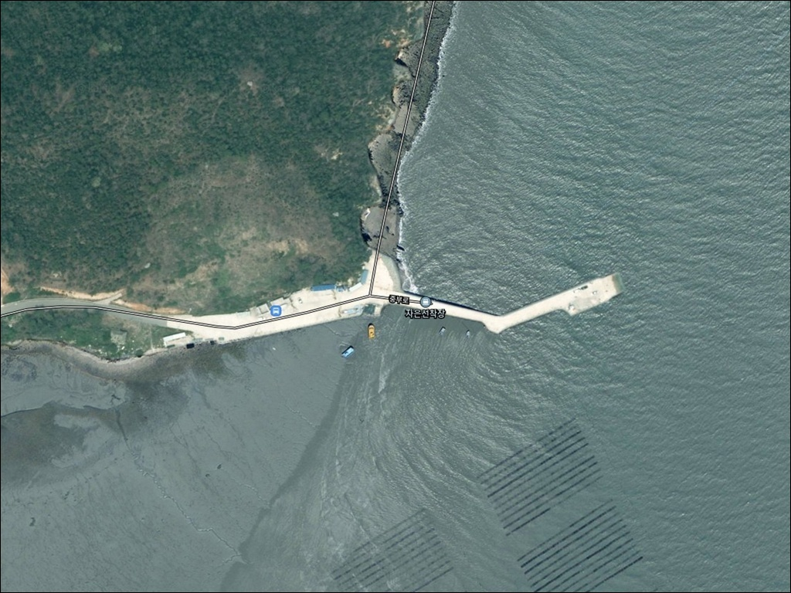
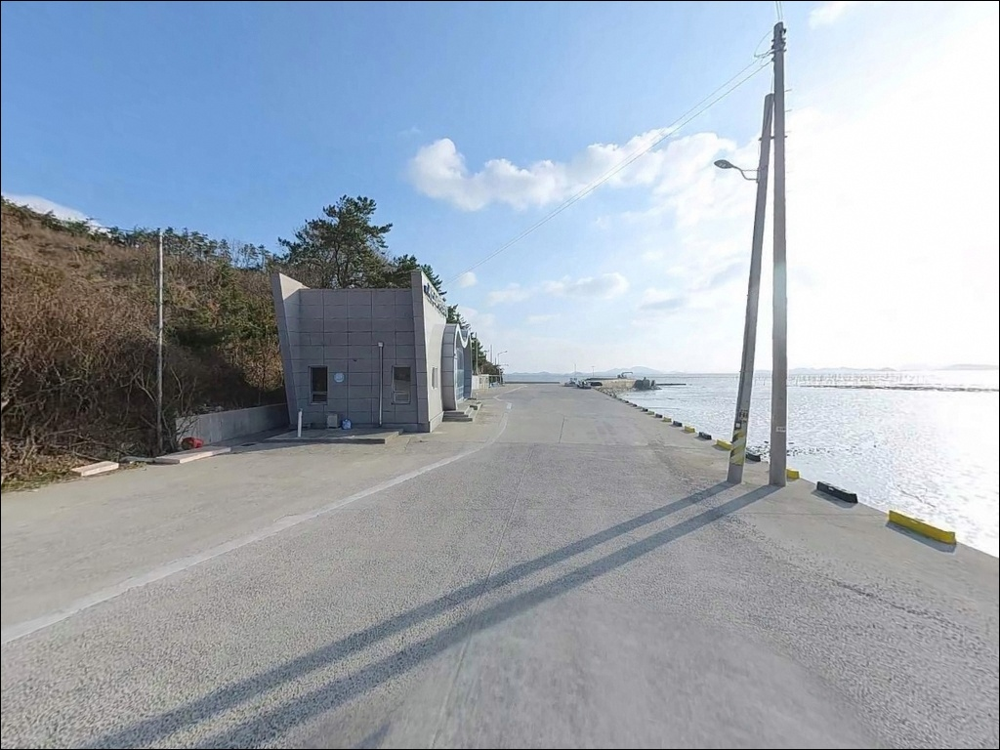
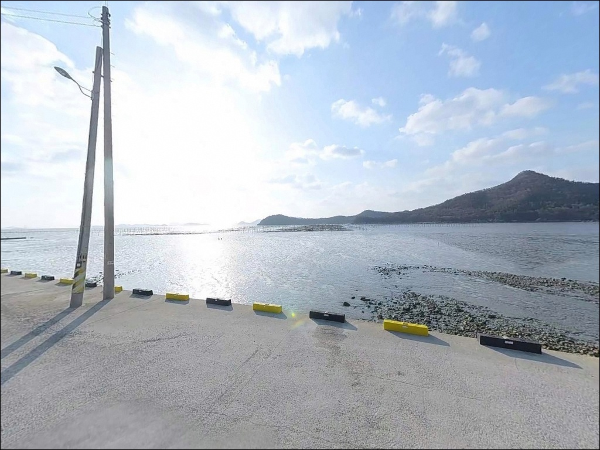
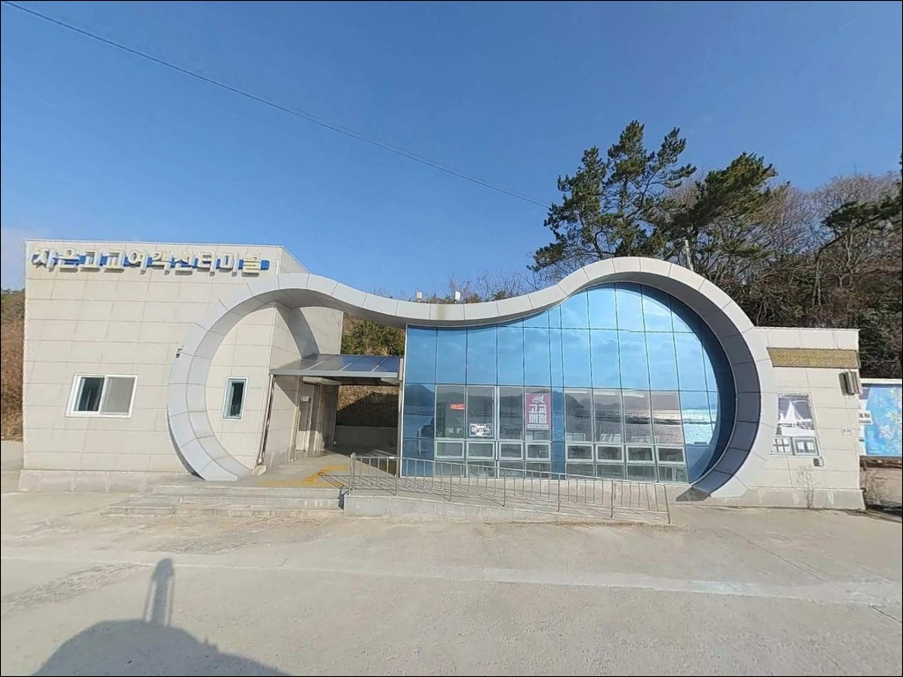
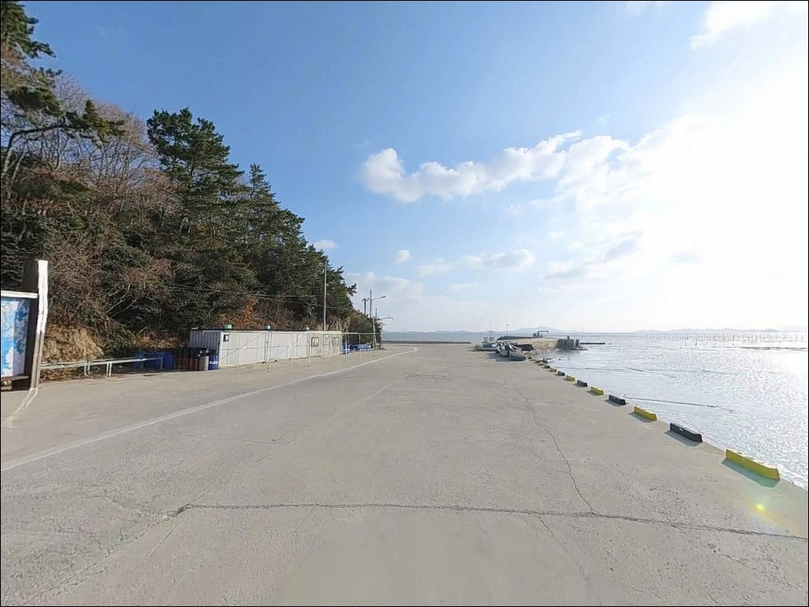
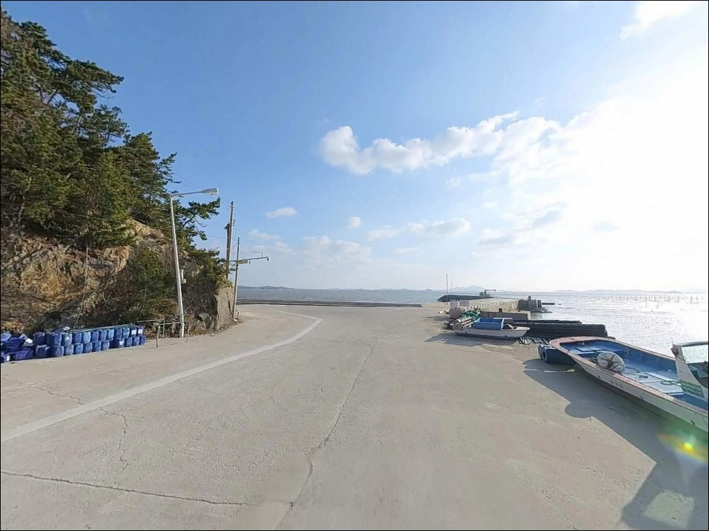
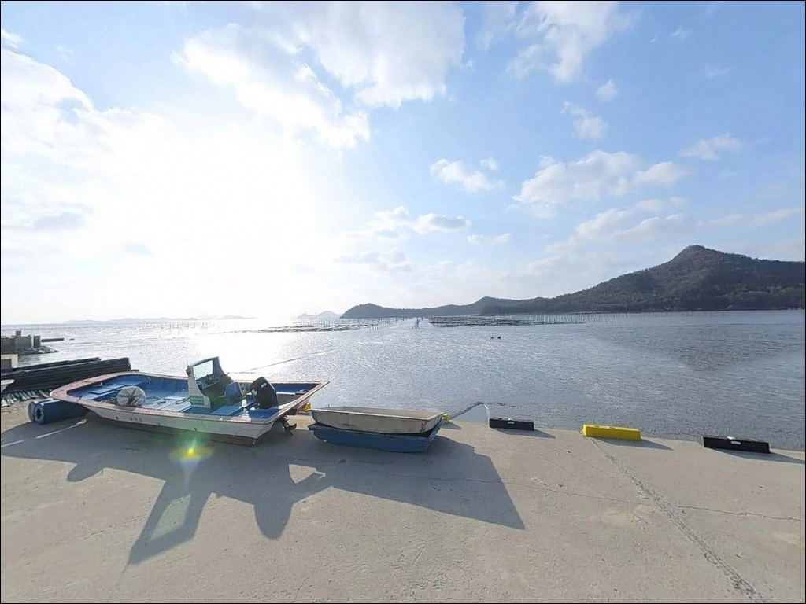
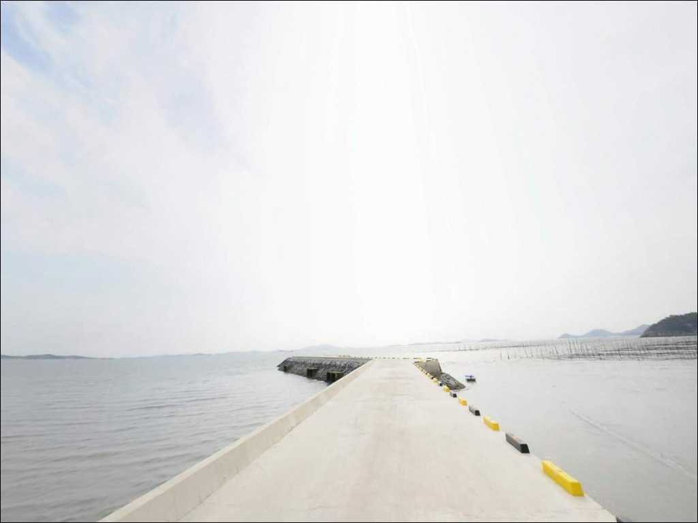
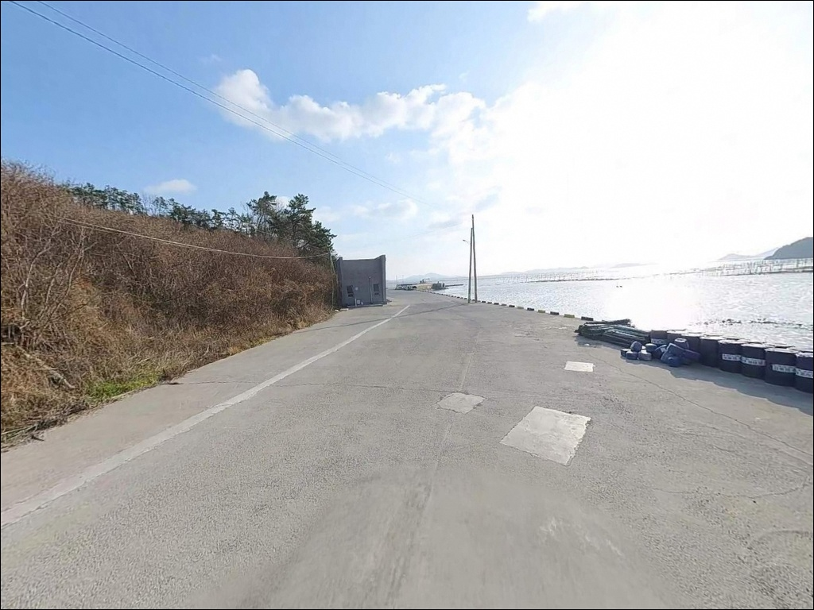

자은선착장, 자은도 전남 신안군 자연의 여백을 느낄 수 있는 차박, 낚시 명소
이 페이지에는 광고(제휴 링크 포함)가 있으며, 광고 링크를 통해 구매하면 운영자가 판매 수익 또는 수수료를 받을 수 있습니다. 포인트 사진: 카카오맵 스카이뷰·로드뷰. 이 페이지의 지도·사진 이미지는 카카오맵의 실제 서비스 이미지와 다를 수 있습니다.


포인트 안내
자은고교선착장
전남 신안군 자은면 한운리 산 24-12
자은도 북서단 해안에서 물때 확인 없이 진입하면
간조 시 갯벌이 드러나
발판에서 투척할 수 있는 수심 자체가 사라지는 구조입니다.
만조 전후 2~3시간을 계산하지 않고 도착하면
낚시 가능한 조위를 처음부터 놓치는 가장 흔한 실수가 됩니다.
이 글은 자은고교선착장의
진입 환경, 낚시 여건, 물때 판단 기준,
차박 체류 조건에 집중합니다.
조황 단정이나 특정 어종 보장은
이 글의 범위에 포함되지 않습니다.

1. 진입 동선과 포인트 접근성
자은고교선착장은 천사대교 개통 이후
육로로 접근이 가능한 포인트입니다.
자은도 내부 도로를 따라 북서쪽 한운리 방향으로 이동하면
자은서부길 끝단에서 선착장 입구에 닿습니다.
차도선이 운항하는 여객선 터미널 구조이므로
차량 진입로와 회차 공간은
일반 승용차 기준으로 무난한 편입니다.
선착장 터미널 앞쪽 공터와 도로변 여유 공간이
주차 후보지입니다.
여객선 이용객 차량이 드나드는 구조이므로
선박 접안 동선을 막지 않는 자리에
주차 위치를 잡는 것이 기본입니다.
대형 SUV나 캠핑카는 공간 여건상
출발 전 지도로 공터 규모를 확인하고 가는 편이 안전합니다.
한운리 마을과 선착장이 가까운 구조이므로
진입 동선 자체에 큰 어려움은 없습니다.
다만 자은서부길 끝단에 가까워질수록
도로 폭이 좁아지는 구간이 나올 수 있어
야간 진입 시에는 속도를 줄이고 천천히 접근하는 것이 좋습니다.

2. 차박 환경과 야간 체류 여건
자은고교선착장은 낮 동안 여객선 이용객이 드나드는 공간이지만,
막배 이후에는 통행이 거의 없는 조용한 분위기로 바뀝니다.
한운리 일대가 소규모 어촌 마을 구조이고
민가 밀집도가 높지 않아
야간 프라이버시는 상대적으로 확보되는 편입니다.
여객선 터미널 시설물 특성상 보안등이 있는 구조이지만,
야간 운항이 없으므로 소등 여부는 현장에서 확인해야 합니다.
개인 조명 장비는 반드시 챙겨야 합니다.
자은도 북서 방향 해안 특성상 계절에 따라
바람 영향을 받는 날이 있으므로
기상 예보는 출발 당일 아침에 한 번 더 확인하는 편이 좋습니다.
선착장 공터 규모가 크지 않아
차박을 메인 목적으로 삼기에는 공간 제약이 있습니다.
낚시 후 조용히 하룻밤 머무는 용도로는 나쁘지 않으나,
넓은 주차 공간이 필요하다면 둔장해변 방향이 더 유리합니다.


3. 주변 편의시설 및 인프라 현황
자은고교선착장에는 여객선 터미널 시설로
대합실, 남녀화장실, 매표소, 특산물 판매장이 갖춰져 있습니다.
화장실은 터미널 운영 시간 내 이용이 기본이므로
야간에는 개인 준비를 별도로 갖추는 것이 현실적입니다.
선착장 반경 3km 이내에서
편의점이나 마트를 기대하기 어렵습니다.
자은면 면소재지 방향으로 이동해야
기본 생활 인프라를 이용할 수 있는 구조입니다.
식수, 얼음, 낚시 소품, 연료 등
완전 자급 체제로 진입하는 것이 기본 준비 방향입니다.

4. 진입 전 반드시 챙겨야 할 준비사항
이 포인트에서 가장 먼저 확인해야 할 것은 물때입니다.
자은도 일대는 간조 시 섬 주변이 갯벌로 드러나는 지형이고,
신안군 공식 안내에 자은 고교항 저수심으로
여객선 결항이 발생할 수 있다는 내용이 명시되어 있습니다.
낚시 타이밍은 초들물~중날 구간,
즉 간조 직후 조위가 오르기 시작하는 시점부터
만조 전까지가 기본 판단 기준입니다.
바다타임에서 자은도 기준 물때를 확인하고
만조 전후 2~3시간을 노리는 방식으로 출발 시각을 잡는 것이
이 포인트를 제대로 활용하는 방법입니다.
자은도·암태도 사이 수도에서는 최대 4.7kn의 강한 조류가 흐르므로
선착장 끝단이나 경사로 인근은 각별한 주의가 필요합니다.
여객선 운항 시간(하루 4회) 중에는
낚싯대를 걷고 선착장 발판 공간을 확보해야 합니다.
야간 낚시를 계획한다면
헤드랜턴, 구명조끼, 미끄럼 방지 신발은
반드시 갖춰야 합니다.

5. 자은도 북서단 지형이 만드는 낚시 여건
자은고교선착장은 자은도 최북서단에서
증도 방향으로 돌출된 구조의 선착장입니다.
앞바다는 자은도와 암태도, 증도로 둘러싸인 내해 수도 구간으로
조류 흐름이 꾸준히 살아 있는 지형 특성을 가집니다.
자은도 북측이 농어와 감성돔 조과가 기대되는 포인트 권역에 해당한다는
지역 낚시 포인트 정보가 있으며,
고교선착장은 그 해안선상에 위치합니다.
저질은 펄이며 간조 시 갯벌이 드러나는 특성상
수심이 충분히 확보되는 만조 전후가 유효한 낚시 구간입니다.
선착장 끝단이나 외항 방향으로 갈수록
수심 변화 구간이 형성되는 구조로 보입니다.
선착장 앞바다에는 양식장이 배치되어 있어
투척 방향과 탐색 구간을 현장에서 먼저 파악하고
채비를 넣는 것이 기본 순서입니다.
간조 시 갯벌이 드러나는 지형 특성상,
만조 전후 2~3시간을 확보하지 않으면
선착장 발판에서 유효한 낚시 자리가 남지 않습니다.
출조 전에 자은도 일대 최신 조황을
검색해두는 것이 현장 판단에 도움이 됩니다.


6. 포인트 지형에 맞는 낚시 스타일
이 포인트에서 가장 기본적인 접근은 원투낚시입니다.
펄 저질 특성에 맞는 참갯지렁이, 청갯지렁이, 깐새우 등
바닥층 미끼를 활용해 외항 방향으로 투척하는 방식이
이 지형 조건에 어울립니다.
만조 전후 조위가 충분히 오른 타이밍에
채비를 넣는 것이 바닥 어종을 노리기 좋은 조건입니다.
릴찌낚시는 초들물~중날 구간에서
감성돔과 숭어를 노리는 방식으로 접근하면 어울립니다.
수도 구간에서 조류가 살아 있는 타이밍을 잡아
찌를 조류에 태워 흘리는 방식이
자은도 조류 흐름을 활용하는 방법입니다.
농어 루어는 저녁 이후 선착장 수로 구간에서
미노우 플러그 류를 사용하는 방식이 이 지형에 맞습니다.
조류가 흐르는 수로 끝단이나 갯바위 인근 경계 구간을
노리는 스타일도 시도해볼 수 있습니다.
다만 선착장 앞 양식장 배치 구간과의 거리는
현장에서 확인한 뒤 투척 방향을 결정해야 합니다.

7. 자은도 북측 해안의 대안 포인트와 플랜 B
자은고교선착장 여건이 기대에 못 미칠 때
가장 가까운 대안은 상장고지단 갯바위입니다.
선착장에서 약 2.9km 거리로,
자은도 낚시 포인트 중 갯바위 지형으로 분류된 곳입니다.
자은도 북측 권역에서 농어와 감성돔 조과가 기대되는
포인트 지대와 같은 해안선상에 위치합니다.
한운마을 선창은 고교선착장에서 약 3.9km 거리입니다.
비슷한 선착장 낚시 형태이지만
지형 조건이 달라 반응이 다를 수 있습니다.
부엉산 밑 선창은 약 5.1km 거리로
자은도 북측 포인트 벨트의 마지막 거점입니다.
조황이 기대에 못 미치는 날이라면
이 세 곳을 순차적으로 탐색하는 동선이
자은도 북측 해안을 효율적으로 공략하는 방법입니다.
차박 공간이 협소하다고 판단될 경우
자은도 내 둔장해변이나 백길해변 방향이 대안입니다.
주차 공간이 넓고 편의시설도 상대적으로 갖춰진 편이라
차박 여건만 따진다면 해수욕장 인근이 더 유리합니다.

자은도 북서단에서
조류를 타며 낚싯대를 드리우는 포인트
원투낚시나 릴찌낚시를 즐기는 낚시인이라면
자은고교선착장의 조류 흐름과 지형 조건은
맞는 구조입니다.
자은도 북측 해안선상에 위치해
감성돔, 농어, 숭어를 기대해볼 수 있는 권역에 포함되고,
아직 많이 알려지지 않은 조용한 포인트이기도 합니다.
반면 물때 계산 없이 간조 전후에 도착하거나,
여객선 운항 시간과 낚시 시간이 겹치는 상황을
조율하지 않으면
낚시 가능한 자리와 시간이 생각보다 짧아질 수 있습니다.
물때 확인, 자급 준비, 여객선 운항 시간 파악,
이 세 가지를 갖추고 간다면
자은도 북서단 해안에서 기억에 남는 출조가 됩니다.
한적한 섬 마을 선착장에서
조류가 살아나는 타이밍에 맞춰 낚싯대를 드리우고,
막배 이후의 고요한 밤을 차 안에서 보내는 것이
자은도 북서단이 주는 담백한 출조 방식입니다.